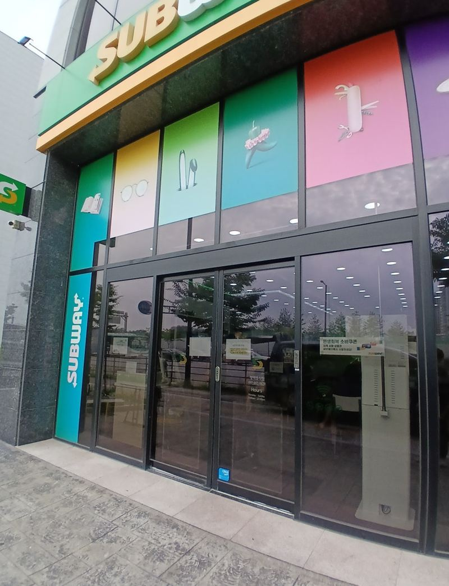
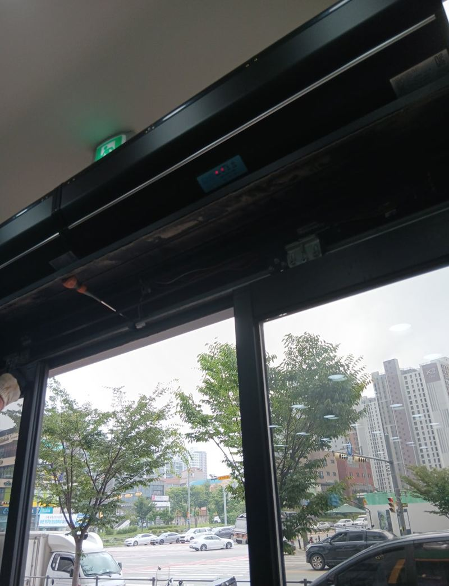
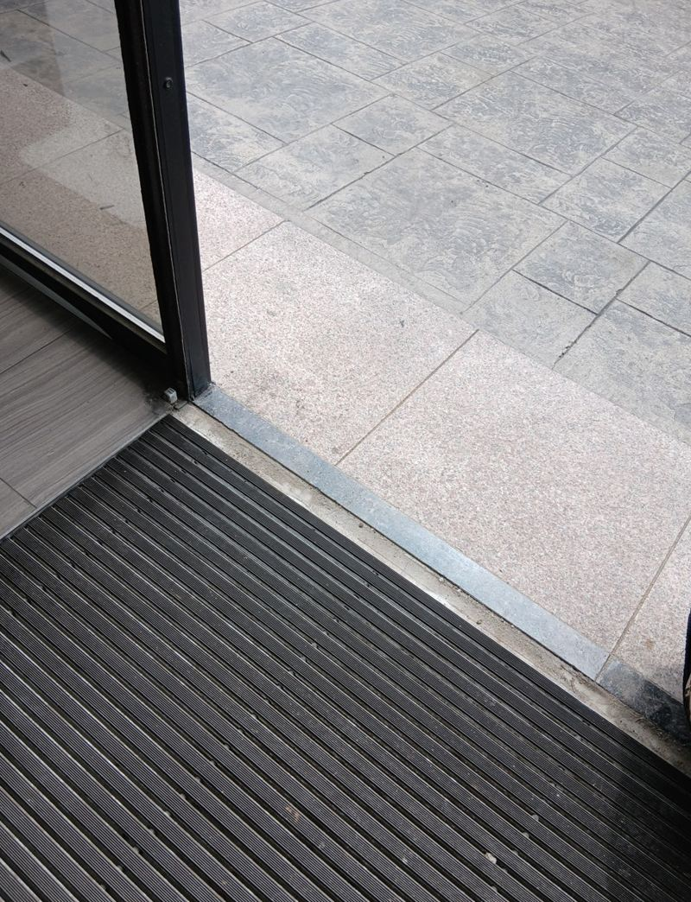
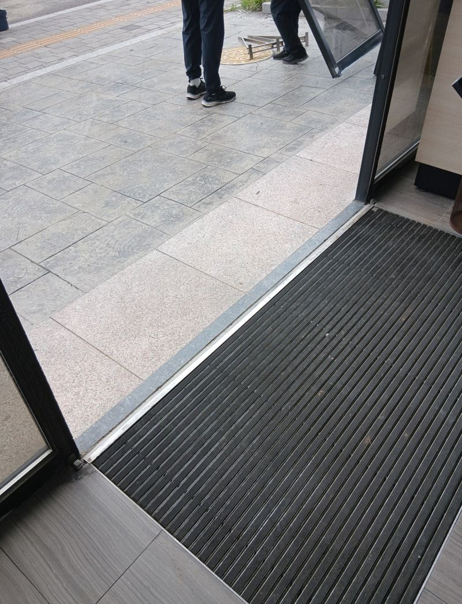
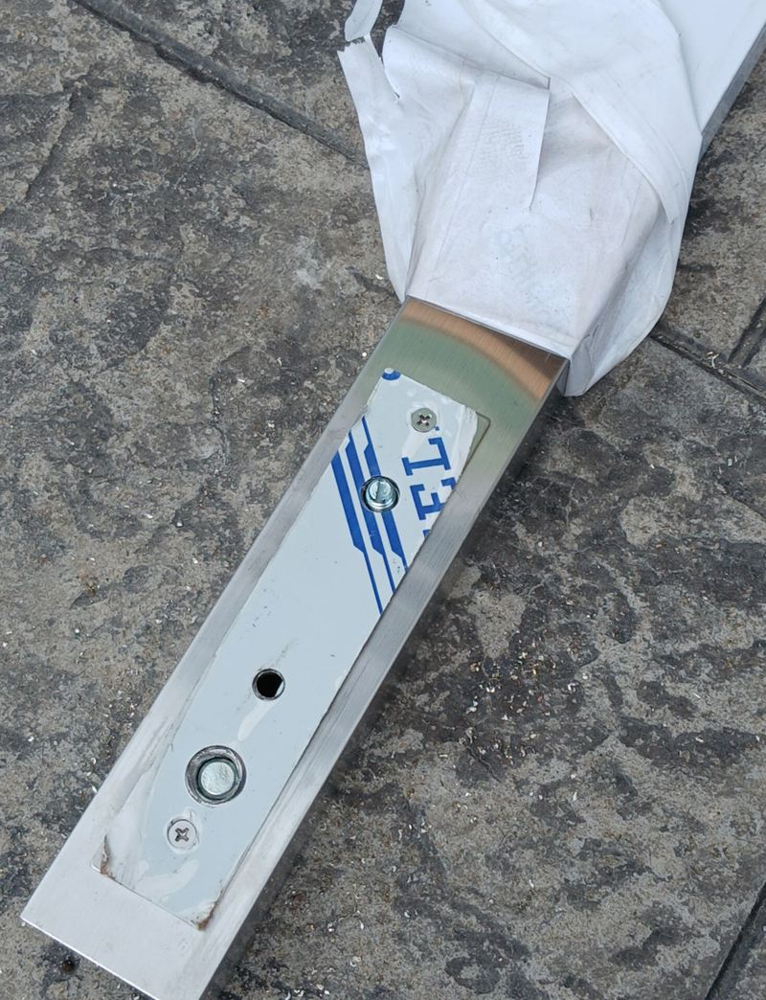
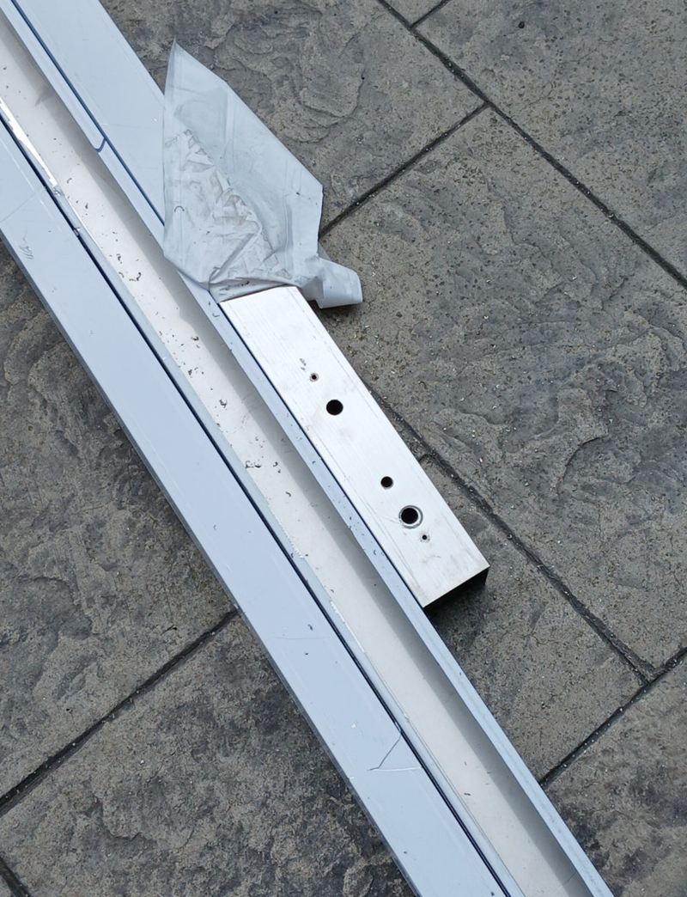
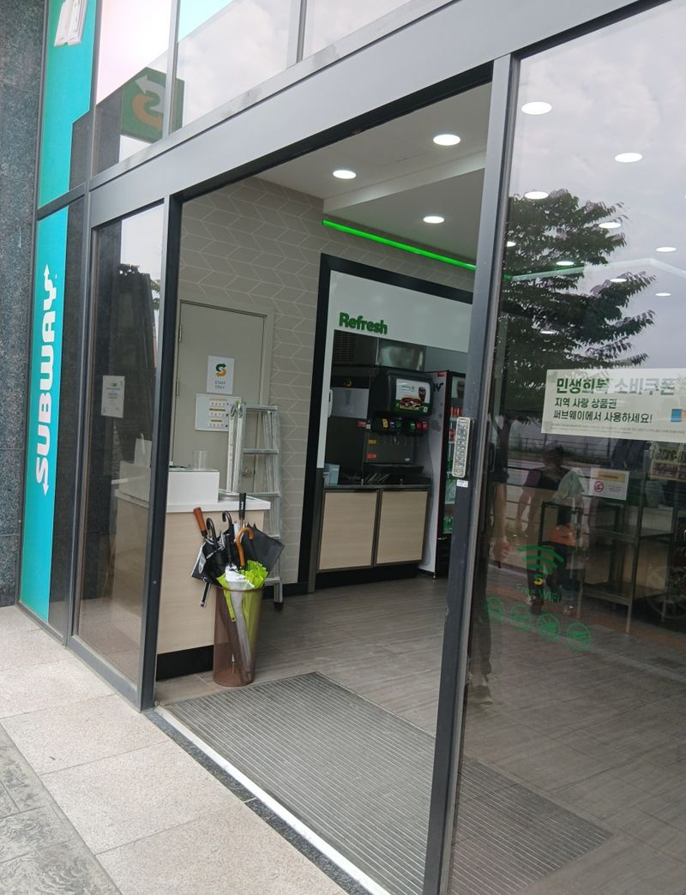

평택 자동문 철거 후 강화유리문 설치 견적

 철거 전설치 후
철거 전설치 후← 밀어서 전후 비교 →
"자동문이 반만 열리다 서거나 아예 안 열려서 손님들이 불편해해요." 평택 동삭동 1층 매장 사장님의 연락이었어요. 고쳐 쓰는 것도 생각했지만 고장이 잦아 수리비가 계속 들던 상황이라, 아예 구조가 단순한 문으로 바꾸고 싶어 하셨어요. 자동문의 모터·센서·레일을 모두 걷어 내고, 실측해 제작한 세이프티 강화유리문을 달아 도어락까지 마무리했어요.
| 현장 | 평택 지제·동삭동 1층 상가 매장 출입구 |
|---|---|
| 증상 | 자동문이 반쯤 열리다 멈추거나 열리지 않음 |
| 요청 | 자동문 철거, 고장이 적은 강화유리문으로 교체 |
| 한 일 | 보양 → 전원 차단·자동문 해체 → 바닥 몰딩 제거 → 문틀 수평 고정 → 강화유리문 설치 → 실리콘·도어락 |
자동문 대신 강화유리문을 고르는 이유
자동문은 손님이 손을 쓰지 않아도 되는 대신 센서, 모터, 레일, 바퀴처럼 움직이는 부품이 많아요. 하나만 닳아도 문이 멈추고, 그때마다 출장 수리가 필요해요. 수동 강화유리문은 경첩과 손잡이 정도만 있어서 고장 날 곳이 훨씬 적어요.
| 자동문 | 수동 강화유리문 | |
|---|---|---|
| 편의 | 손 대지 않고 출입 | 밀고 당기는 방식 |
| 고장 부위 | 센서·모터·레일 등 | 경첩·손잡이 중심 |
| 잘 맞는 곳 | 짐을 든 출입이 많은 곳 | 고장이 잦아 수리비가 부담인 매장 |
이번에 단 문은 세이프티 도어예요. 문이 빨리 닫혀도 충격을 줄여 주는 장치가 있어 손 끼임 걱정을 덜어 주고, 카페·병원·어린이집처럼 사람이 자주 드나드는 입구에 많이 써요.
철거부터 설치까지 순서
보양과 자동문 해체
주변 바닥과 벽을 덮고 전원을 내린 뒤 센서, 모터, 레일을 떼어 냈어요. 배선은 상하지 않게 정리해 두었어요.

바닥 몰딩 제거
자동문 아래 깔린 몰딩과 부품을 바닥이 상하지 않게 떼고, 새 문이 설 자리를 평평하게 만들었어요.


폐기물 정리
떼어 낸 자동문과 부품은 요청하신 대로 바로 수거 차량에 실었어요.


문틀 수평 맞추고 유리문 달기
문틀의 수평·수직을 정확히 맞춰 고정한 뒤, 미리 실측해 제작한 강화유리문을 경첩·손잡이와 함께 달았어요. 문틀이 틀어지면 문이 흔들리고 틈으로 바람이 들어와요.

실리콘과 도어락
틈새를 바깥용 실리콘으로 메우고 도어락을 단 뒤 여닫힘을 시험했어요.
강화유리문 견적이 달라지는 요소
- 문 크기와 유리 두께출입문은 보통 12mm 강화유리를 많이 쓰고, 크고 두꺼울수록 제작비가 올라가요.
- 부가 장치도어락, 도어 클로저, 안전바를 더하면 부품이 늘어나요.
- 철거 범위자동문 상부 박스나 바닥 레일을 걷은 뒤 추가 마감이 필요하면 손이 더 가요.
- 안전필름깨질 때 파편이 흩어지지 않게 필름을 붙이면 항목이 하나 더 생겨요.
사장님은 "매일 문 때문에 신경 쓰였는데 매장이 훨씬 깔끔해졌고, 손님들도 문이 부드럽다고 한다"며 좋아하셨어요.
자동문 철거·강화유리문 질문
자동문을 고쳐 쓰는 게 나을 때도 있나요?
부품 하나만 문제라면 수리가 맞을 수 있어요. 고장이 자주 반복되면 교체를 같이 비교해 보세요.
기존 유리를 그대로 쓸 수 있나요?
자동문 유리는 구조가 달라 대개 새로 제작해요. 현장에서 상태를 보고 판단해요.
가게 문을 닫아야 하나요?
출입구 자체를 바꾸는 일이라 작업하는 동안은 손님 출입이 어려워요. 쉬는 날이나 오픈 전으로 잡는 경우가 많아요.
떼어 낸 자동문 부품은요?
이 현장은 요청대로 수거 차량에 바로 실었어요. 모터 등 쓸 만한 부품을 남겨 두고 싶으면 미리 말씀해 주세요.
바닥에 레일 자국이 남나요?
몰딩을 뗀 자리는 정리하지만 바닥재에 따라 자국이 보일 수 있어요. 미리 사진으로 확인해요.
견적 문의 때 무엇을 알려주면 되나요?
출입구 정면 사진, 대략의 가로·세로 크기, 원하는 손잡이와 잠금 방식을 알려주세요.
다른 유리문·자동문 현장
출입구 정면 사진과 대략의 크기를 알려주시면 견적 요소를 먼저 짚어 드려요.
전화 상담 010-4517-9872